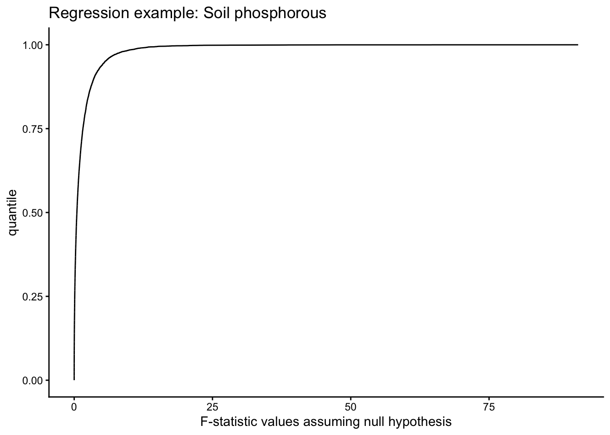
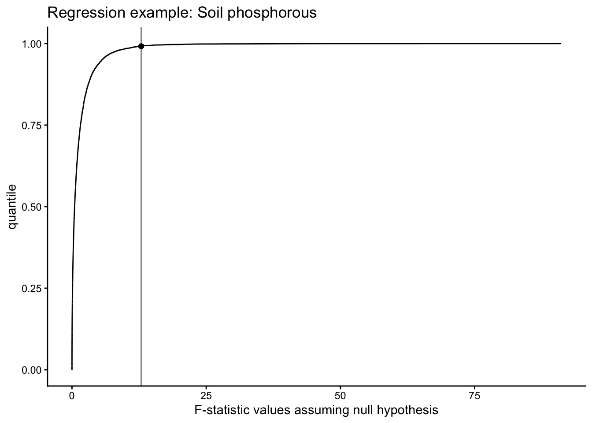
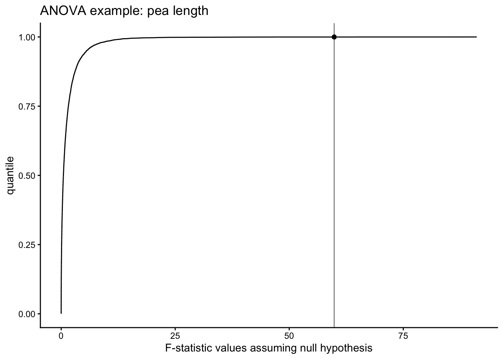

19 Fri Oct 23 (Quiz 3, A3 due) Randomization when assumptions are not met.
19.1 Last 20 minutes: Quiz 3
Dr. Schneider’s notes discuss using randomization when the assumptions of the linear model are not met. Below is the code to do this. I will illustrate this first with the corn phosphorous data (regression) and then I will illustrate it using sugar experiment data (one-way ANOVA).
19.2 Regression example
corn.data <- read.csv("https://raw.githubusercontent.com/ahurford/biol-4605-data/refs/heads/main/data/corn.csv")
corn.data## Psoil Pcorn
## 1 1 64
## 2 4 71
## 3 5 54
## 4 9 81
## 5 13 93
## 6 11 76
## 7 23 77
## 8 23 95
## 9 28 109We can revisit the assumption checking that we did when did a regression for these data here. The exploratory analysis found that all our assumptions were quite well satisfied. Dr. Schneider performed a randomization for these data in Step 8 of Chapter 9.1 here. Dr. Schneider finds \(p=0.0079\) for 10,000 samples under random resampling, and concludes that the residuals not being normally distributed for this analysis does not change our conclusions.
Our analysis of the data found that there was a relationship between the soil phosphorous and corn phosphorous. We will test the null hypothesis of no relationship by reshuffling the response variable data by randomly assigning response variable values (without replacement) to the explanatory variable values: i.e., if there is no relationship between the soil phosphorous and the corn phosphorous then it should not matter to which value of the predictor variable, we assign any of the response variable values. We will then re-calculate our slope coefficient given our re-sampled data, where we assumed the null hypothesis of no relationship between the explanatory variable and the response variable.
We interpret the result of our randomization by evaluating the proportion of times that the randomized data (assuming the null hypothesis) resulted in an F-statistic larger then the F-statistic we calculated for the regression slope for the original data. In the original analysis, we calculated a p-value for that F-statistic by assuming independent normally distributed residuals with equal variance. For the randomization experiment, we equate the F-statistic with a p-value (describing the type I error) by calculating the proportion of times that the randomization experiment (assuming the null hypothesis) produced an F-statistic larger then the F-statistic calculated for the actual data.
Psoil<-corn.data$Psoil # explanatory varaible
# Make a function that calculates the F-statistic for the regression assuming the null hypothesis
reg.func = function(){
resample.Pcorn = sample(corn.data$Pcorn,replace=FALSE)
resample.corn = data.frame(Psoil=Psoil, Pcorn = resample.Pcorn)
resample.mod = lm(Pcorn~Psoil, data = resample.corn)
anova_result = anova(resample.mod)
f.stat <- anova_result["F value"][1, 1]
return(f.stat)
}
# repeat the reg.func() calcuation 10,000 times to generated 10,000 F-statistics assuming the null hypothesis
random.f = replicate(10000,reg.func())If you copy and paste this code into an R console (or script) run the function reg.func() a few times and observe that it calculates a different F-statistic for the randomized data, under the assumption of the null hypothesis being true, each time. The replicate function performs the reg.func() calculations 10,000 times.
We can make an empirical cumulative density function of our resulting F-statistics:
require(ggplot2)
ecdf = data.frame(f.value = sort(random.f), quantile = seq(1,10000)/10000)
g1 = ggplot(ecdf, aes(x = f.value, y = quantile)) +
geom_line()+xlab("F-statistic values assuming null hypothesis")+ggtitle("Regression example: Soil phosphorous")+theme_classic()
g1
Now we consider the F-statistic that we calculate for the actual data:
mod = lm(Pcorn~Psoil, data = corn.data) # using the corn.data rather than the resampled data
anova_result = anova(mod)
f.data <- anova_result["F value"][1, 1]
f.data## [1] 12.8868We calculate the quantile in the randomized F-statistic dataset for which our F-statistic calculated from the data occurs:
ecdf = data.frame(f.value = sort(random.f), quantile = seq(1,10000)/10000)
p.est = ecdf$quantile[min(which(ecdf$f.value>f.data))]
1-p.est## [1] 0.0082We estimate that 0.0086 of the randomly generated F-statistics (assuming the null hypothesis) are bigger than the F-statistic generated from the real data. We can add this to our ggplot:
## Warning in geom_point(aes(x = f.data, y = p.est)): All aesthetics have length 1,
## but the data has 10000 rows.
## ℹ Please consider using
## `annotate()` or provide
## this layer with data
## containing a single row.
19.3 ANOVA example
Using the same reasoning as above, under the null hypothesis the pea length measurements would have been the same irrespective of the treatment that was applied.
pea.data = read.csv("https://raw.githubusercontent.com/ahurford/biol-4605-data/refs/heads/main/data/pea-length.csv")
pea.data## treatment length
## 1 Control 65
## 2 Control 67
## 3 Control 68
## 4 Control 70
## 5 Control 71
## 6 Control 75
## 7 Control 76
## 8 Control 74
## 9 Control 72
## 10 Control 68
## 11 Control 66
## 12 Glucose 57
## 13 Glucose 58
## 14 Glucose 59
## 15 Glucose 60
## 16 Glucose 61
## 17 Glucose 62
## 18 Glucose 60
## 19 Glucose 60
## 20 Glucose 59
## 21 Glucose 59
## 22 Glucose 59
## 23 Fructose 56
## 24 Fructose 57
## 25 Fructose 58
## 26 Fructose 60
## 27 Fructose 61
## 28 Fructose 58
## 29 Fructose 58
## 30 Fructose 58
## 31 Fructose 58
## 32 Fructose 58
## 33 Fructose 58
## 34 Fructose 58
## 35 Sucrose 56
## 36 Sucrose 57
## 37 Sucrose 58
## 38 Sucrose 59
## 39 Sucrose 61
## 40 Gluc.Fruc 62
## 41 Gluc.Fruc 63
## 42 Gluc.Fruc 64
## 43 Gluc.Fruc 65
## 44 Gluc.Fruc 66
## 45 Gluc.Fruc 67
## 46 Gluc.Fruc 64
## 47 Gluc.Fruc 65
## 48 Gluc.Fruc 64
## 49 Gluc.Fruc 65
## 50 Gluc.Fruc 65Let’s create 10,000 random data sets and calculate the F-statistic each time, where the assumption is that there is no effect of the treatment on the pea length:
treatment<-pea.data$treatment # explanatory varaible
# Make a function that calculates the F-statistic for the regression assuming the null hypothesis
reg.func = function(){
resample.pea = sample(pea.data$length,replace=FALSE)
resample.pea = data.frame(treatment=treatment, length = resample.pea)
resample.mod = lm(length~treatment, data = resample.pea)
anova_result = anova(resample.mod)
f.stat <- anova_result["F value"][1, 1]
return(f.stat)
}
# repeat the reg.func() calcuation 10,000 times to generated 10,000 F-statistics assuming the null hypothesis
random.f = replicate(10000,reg.func())Let’s calculate the F-value for the ANOVA on the actual data:
mod = lm(length~treatment, data = pea.data) # using the corn.data rather than the resampled data
anova_result = anova(mod)
f.data <- anova_result["F value"][1, 1]
f.data## [1] 59.85516And the quantile for the randomized data that thre real estimate corresponds to:
## [1] 1e-04Let’s graph the results to see where the real estimate of the F-value occurs with respect to the quantiles of the F-statistics generated unber the null hypothesis
ggplot(ecdf, aes(x = f.value, y = quantile)) +
geom_line()+xlab("F-statistic values assuming null hypothesis")+ggtitle("ANOVA example: pea length")+theme_classic()+ geom_point(aes(x=f.data, y=p.est)) + geom_vline(xintercept=f.data, alpha=0.5)## Warning in geom_point(aes(x = f.data, y = p.est)): All aesthetics have length 1,
## but the data has 10000 rows.
## ℹ Please consider using
## `annotate()` or provide
## this layer with data
## containing a single row.
We find that we still reject the null hypothesis that the group means for all the treatments (including the control) are the same.
We could also do our posthoc analysis on the randomization data to test then null hypothesis that the mean of the control is equal to the mean of the treatments, for example.